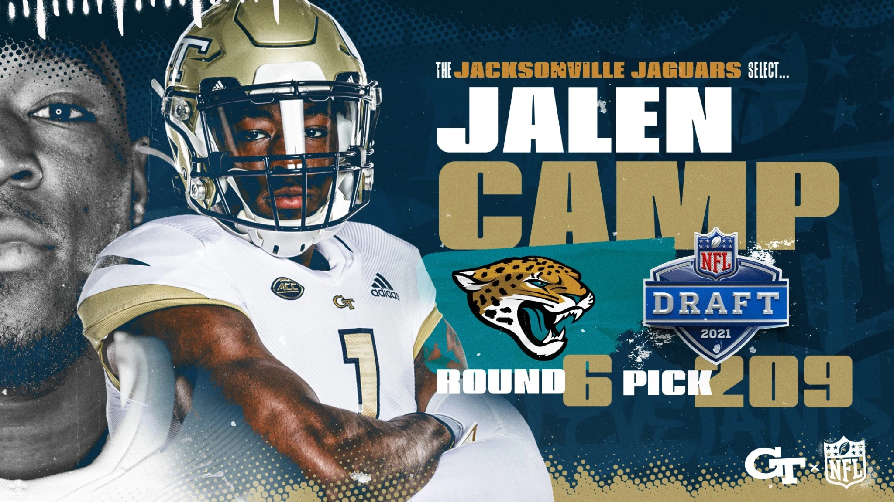
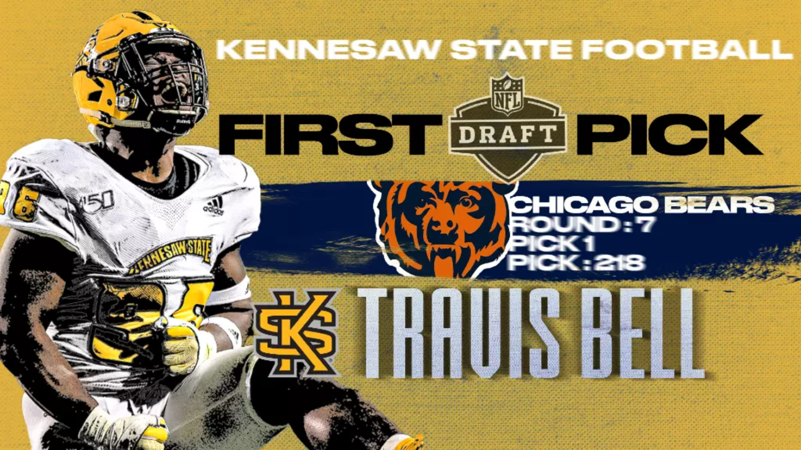
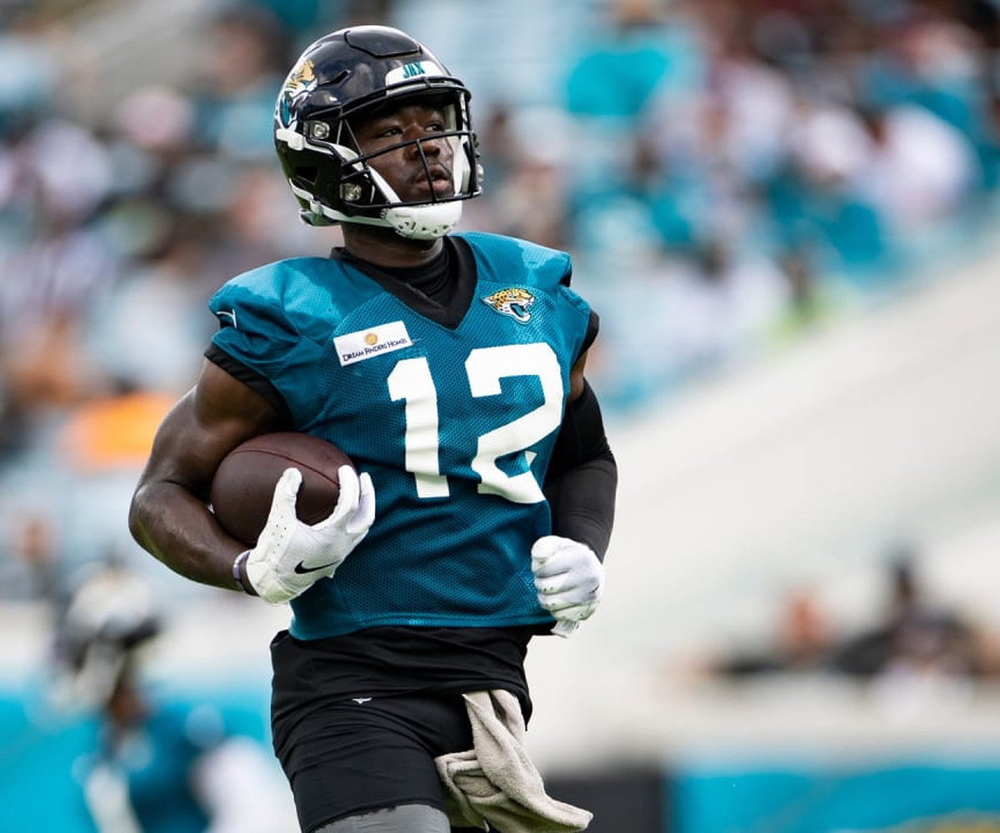
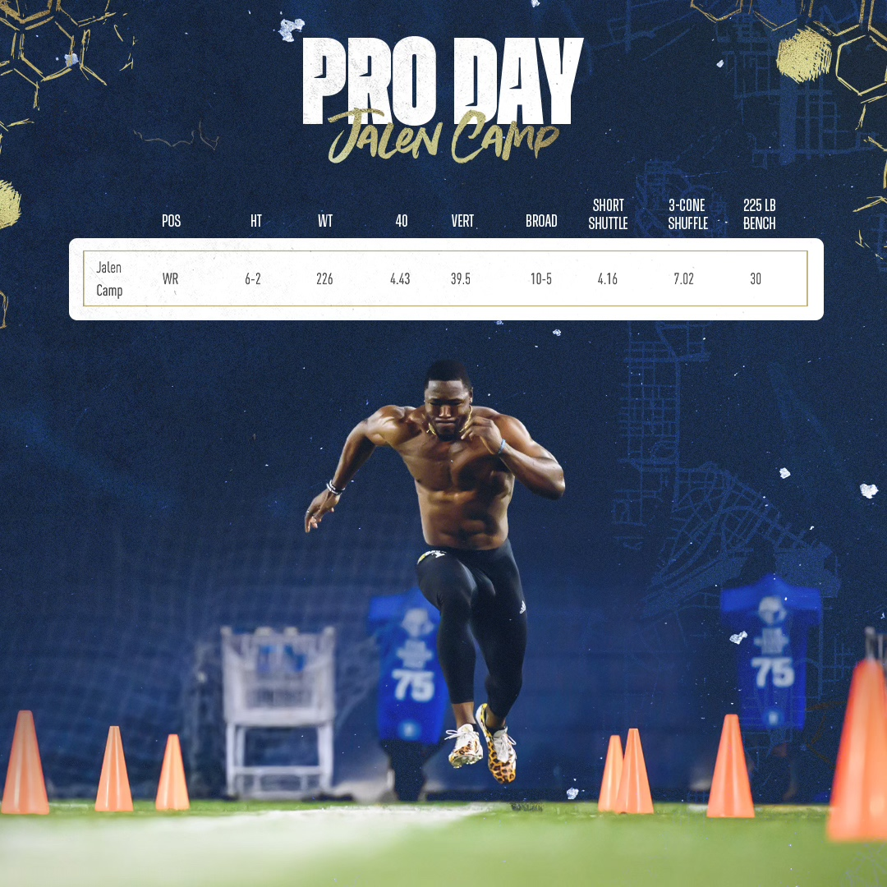
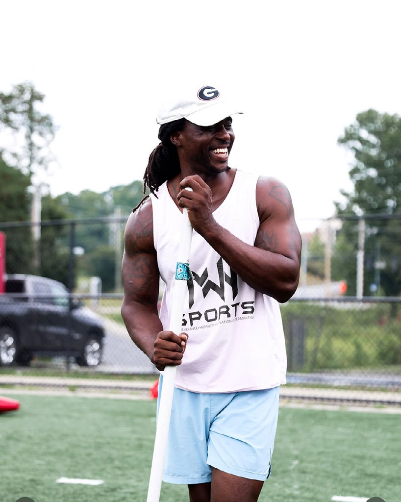
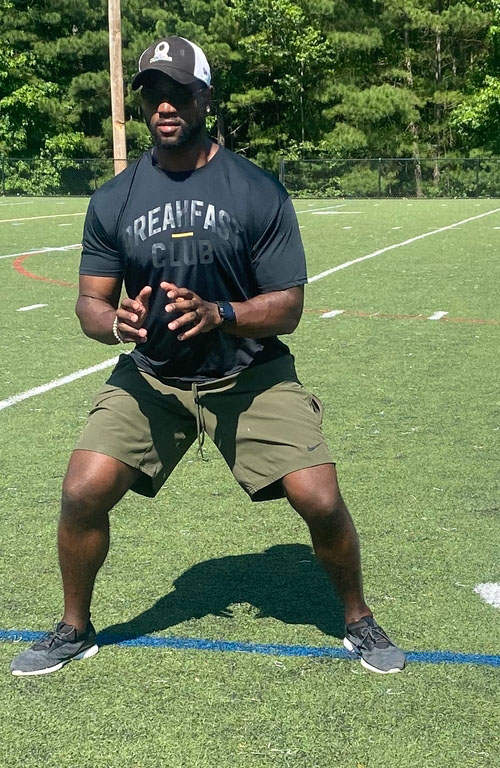
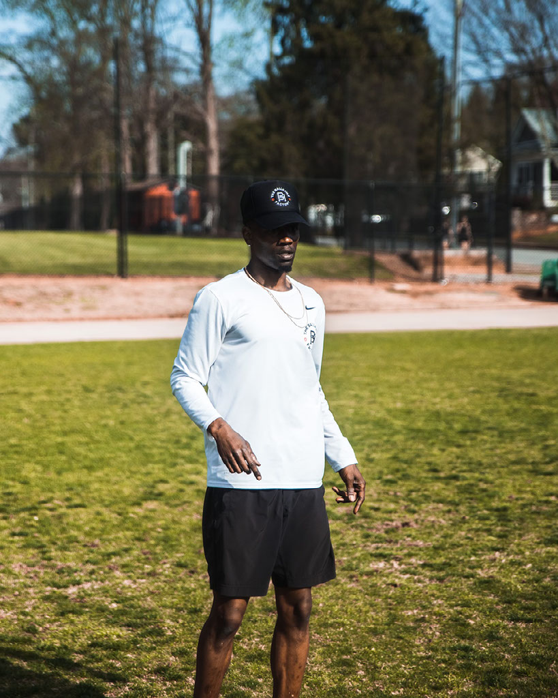
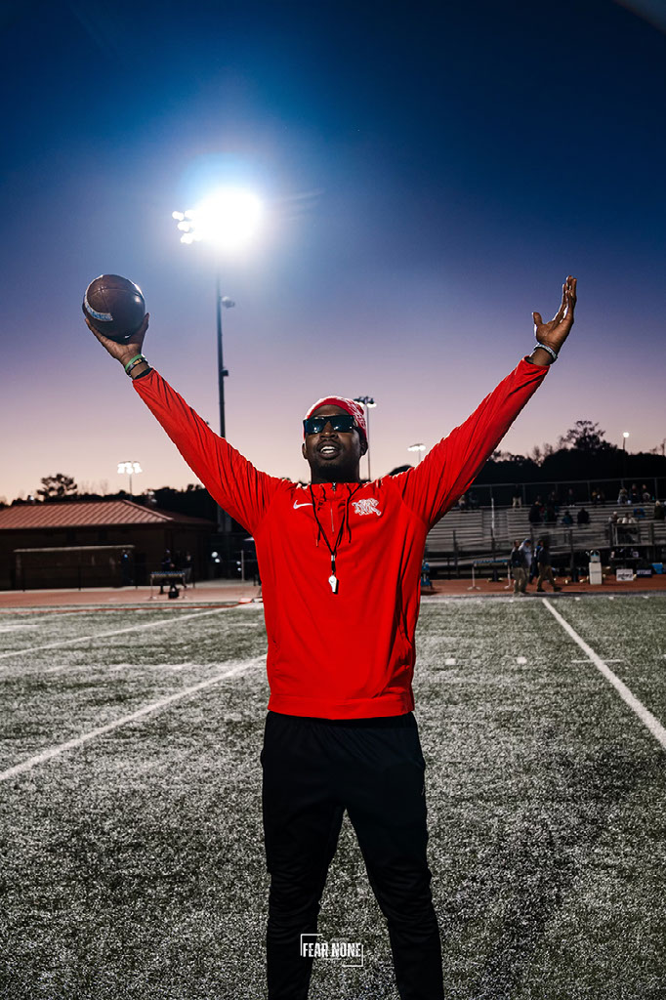

PPF
DRAFT ROOM
Scouting Console Initializing…
Measured output. Corrected movement. Verified results. Every phase at PPF is built to sharpen movement, raise usable output, and produce a profile that looks fast, powerful, efficient, and fully prepared when evaluation actually happens — on the stopwatch, on the jump sheet, in position movement, and across every detail that separates preparation from projection.
Acceleration mechanics, split accuracy, top-end velocity, laser-timed verification
Force production, jump sequence refinement, measurable power output, explosive conversion
Transition detail, route efficiency, change-of-direction sharpness, position-matched work
Weight management, body fat optimization, athletic presentation, combine-ready physique
Session recovery, performance monitoring, workload management, sustained training quality
Speed. Explosiveness. Testing preparation. Position work. Draft profile building. Every session is designed to produce measurable improvement that shows up when evaluation day arrives.
Verified measurables. Professional structure. Readiness monitoring. Body composition management. A training environment built on credibility, consistency, and clear communication with every stakeholder.
Professional supervision. Measured progress. Clear structure and communication. Athlete development with purpose. Every family deserves to know their athlete is in a room that demands excellence and provides it.
High-standard room. Personal attention. NFL-level preparation. Work that transfers. Movement quality, output, recovery, schedule consistency — everything a professional needs to arrive ready.
The work should still look right after the testing cycle.
The best profile is not just timed well. It moves right, holds up, and shows up when football gets fast. At PPF, speed work, jump output, strength development, body composition, and recovery are built to carry into position movement, camp readiness, and real on-field value.
40-yard dash precision, acceleration mechanics, stride frequency drills, resisted sprint loading.
Vertical and broad jump mechanics, force development, trap-bar pulls, depth drops, reactive power.
Position-specific footwork, COD drills, route mechanics, leverage training, body-control sequences.
Recovery protocols, work capacity building, body composition management, repeated-effort conditioning.
Measured for testing. Built for what comes after.
PPF gives agents direct access to verified measurables, structured progress reports, and evaluation-window timing — removing guesswork from the development process and supporting sharper draft decisions.
Reports include metric snapshots, readiness themes, and development trendlines—delivered on a cadence built around evaluation windows.
Yes. Communication is set up around the athlete's decision-making circle from day one.
All combine-standard measurements: 40, vertical, broad, shuttle, 3-cone, bench press, and position-specific markers.
WR — 40 time improved, vertical increased, cleaner start mechanics. Translation: a more projectable profile when the evaluation window opened.
Families deserve to know the plan, see the progress, and trust the environment. PPF provides consistent communication, transparent scheduling, and a structure where accountability is built in — not bolted on.
Communication cadence is established on entry. Families receive weekly snapshots and biweekly check-ins based on the training block.
Yes. For out-of-town athletes, PPF helps coordinate arrival planning, nearby housing recommendations, and scheduling around travel.
Training schedules are built around the athlete's calendar, school commitments, and evaluation windows—never a rigid one-size template.
Parent of RB prep athlete: "We always knew where things stood. The communication was consistent, the plan was clear, and the environment felt right."
Every phase targets the numbers that matter — speed, explosiveness, position-specific movement, and testing transfer. The goal is a measurably better profile when evaluation day arrives.
Speed work, force development, movement quality, position-specific carryover, and recovery—structured across every training week.
The earlier the better. Longer blocks allow deeper development. Short-term prep is available, but results scale with time invested.
Every phase is built with testing transfer in mind. Movement quality, start mechanics, and jump sequencing are all coached directly.
DB — Faster 40, better COD mechanics, improved vertical. Translation: a stronger testing impression and a cleaner movement profile.
PPF delivers individualized off-season programming, structured re-entry prep, and a professional-standard environment — built for athletes who need a plan, not just a gym.
The room is built for serious athletes. The equipment, pacing, and coaching are structured to match professional standards.
Yes. Pro athletes receive individual planning based on their timeline, position demands, and development priorities.
PPF supports full off-season blocks including speed maintenance, movement refinement, body composition work, and recovery protocols.
Alumni WR — returned for off-season re-prep. Maintained speed profile, refined route mechanics, and returned to camp with sharper movement quality.
We establish the starting point, the timeline, and what success needs to look like before training starts.
The first step is understanding what needs to improve, what already travels, and what cannot be left unaddressed.
The plan is built around the athlete's calendar, event targets, and development priorities—not a one-size-fits-all template.
The room should feel personal, direct, and measurable every week.
Progress is tracked, discussed, and adjusted with intent—not guessed at.
As the evaluation window gets closer, the work becomes more precise, not more random.
The process does not stop when the event starts. The outcome needs context, review, and a next move.
Pricing is based on the scope of the training block, the timeline to key events, and the level of individualization required. Shorter prep windows and longer development blocks are structured differently to reflect the work involved.
Yes. Short-term prep is focused on sharpening and refinement closer to evaluation windows. Longer blocks allow for deeper development across speed, power, movement, and body composition. Both are structured with clear objectives.
Duration, training frequency, level of individualization, access to recovery systems, and whether the plan includes evaluation-window-specific preparation. Every program is scoped based on the athlete's actual needs.
Yes. Programming can be tailored to fit timelines ranging from a focused 4-week prep to a full multi-month development cycle. The right structure depends on the athlete's current state, goals, and evaluation calendar.
Training frequency depends on the phase and the athlete's program. Most athletes work 4–6 sessions per week, balancing speed work, strength, position drills, and recovery.
Scheduling is built around the athlete's existing commitments. PPF works with school calendars, team schedules, travel windows, and family obligations to create a realistic, sustainable structure.
A typical week includes speed and power sessions, movement quality work, position-specific training, and structured recovery. The exact split depends on the phase and the athlete's development priorities.
The more time available, the deeper the development. Ideally, athletes begin 8–12 weeks before a key event, though meaningful progress can still be made in shorter blocks with the right focus.
PPF regularly works with athletes traveling in for training. We help coordinate arrival logistics, recommend nearby housing options, and build schedules that account for travel timelines.
Yes. We provide guidance on area housing, transportation options, and recommend establishing a plan before the first week of training begins. PPF ensures athletes are set up to focus on the work.
Athletes with irregular travel schedules receive programming that adapts to their availability. Sessions are designed to maximize impact during in-person blocks, with guidance for off-site maintenance.
A fit conversation, baseline understanding of the athlete's goals and history, communication preferences, and scheduling logistics. The first week should feel structured and purposeful from the start.
Updates go to whoever is in the athlete's decision-making circle—agent, family, or both. The communication structure is established during the entry conversation and honored throughout.
Weekly snapshots are standard. Biweekly or monthly formal updates are provided depending on the training block length. Pre-event and post-event communications are always included.
Metric progress, readiness themes, development trendlines, attendance consistency, and event-readiness assessments. Communication is direct, structured, and built around real observations.
Concerns are addressed directly and promptly. If adjustments need to be made to the plan, training, or communication, they are discussed transparently with the appropriate parties.
Every athlete's program is built around their specific goals, position, timeline, and development needs. There is no single template. Individualization is foundational to how PPF operates.
Recovery is integrated into every training block. Body composition is addressed when relevant to the athlete's evaluation profile. Readiness is monitored continuously and reported on throughout the process.
The environment is demanding but clear. Athletes know the plan, see the progress, and feel the structure. Confidence comes from measured work and consistent communication—not just intensity.
Post-event debrief, outcome review, and next-step strategy. The process is not complete when the event happens—it is complete when the outcome is understood and the next move is clear.
Speed. Power. Position. Readiness. Carryover. Each layer locks into place like part of a machine.
Start angles, shin position, front-side mechanics, projection, stiffness, and clean ground contact — coached so the time reflects the work.
Weight-room output tied to jumps, force production, violent first steps, and movement that shows up in both testing and position drills.
Wideouts, defensive backs, linemen, linebackers, backs, and specialists get position-specific coaching so the work carries over cleanly to the athlete on the board.
Nutrition, recovery, and sports-medicine support stay connected to the work. Athletes recover with the same discipline they bring to training.
PPF doesn't train one trait. PPF closes the whole profile.




NFL Combine participant. Profile built on front-line size, verified testing strength, and movement that translates cleanly in the defensive front.
NFL Combine participant • West Virginia
Combine-level offensive line size and movement. Another clear marker of what the work looks like when it reaches the highest level.
NFL Combine participant • South CarolinaTHE TESTING DAY SHOULD CONFIRM THE WORK.
NOT REVEAL THE GAPS.
A dedicated draft tab, a full pro-alumni board, and measurable leaders on one screen.

Explosive size-speed profile with verified jump ability, bench strength, and receiver measurables that command attention across the board.

All-time rank: #62 of 2,487 wide receiver profiles.
All-time rank: #4 of 112 long snapper profiles.
All-time rank: #20 of 1,808 defensive line profiles.
All-time rank: #79 of 1,209 free safety profiles.
All-time rank: #378 of 3,815 wide receiver profiles.
All-time rank: #262 of 1,808 defensive tackle profiles.
All-time rank: #421 of 2,648 linebacker profiles.
All-time rank: #676 of 3,815 wide receiver profiles.
| Athlete | School | Pos. | Class | RAS | All-time rank |
|---|---|---|---|---|---|
| Jalen Camp | Georgia Tech | WR | 2021 | 9.78 | #62 / 2,487 WR |
| Jack Coco | Georgia Tech | LS | 2020 | 9.92 | #4 / 112 LS |
| Sean Martin | West Virginia | DL | 2025 | 9.68 | #20 / 1,808 DL |
| DK Kaufman | NC State | FS | 2025 | 9.35 | #79 / 1,209 FS |
| Dymere Miller | Rutgers | WR | 2025 | 9.01 | #378 / 3,815 WR |
| Kyler Baugh | Minnesota | DT | 2024 | 8.56 | #262 / 1,808 DT |
| Cam Bright | Washington / Pitt | LB | 2023 | 8.45 | #421 / 2,648 LB |
| Omar Dollison | James Madison | WR | 2025 | 8.35 | #676 / 3,815 WR |
| Travis Bell | Kennesaw State | DT | 2024 | 8.27 | #389 / 1,808 DT |
| Mike Allen | Western Kentucky | DL | 2023 | 8.09 | #474 / 1,808 DL |
| Dezmond Tell | Louisville | DT | 2025 | 7.91 | #551 / 1,808 DT |
| Robert Kennedy | NC State | DB | 2023 | 7.63 | #302 / 1,612 DB |
| Tobias Oliver | Georgia Tech | ATH / QB | 2020 | 7.26 | #145 / 689 ATH/QB |
| Ajani Kerr | UCF | DB | 2025 | 7.21 | #333 / 1,612 DB |
Enter your testing numbers across all 10 official RAS combine measurements. Select your position and see how you rank against your position group, where your strengths are, what to improve, and how you compare to PPF athletes — all on a 0.00 to 10.00 scale.
RAS weights every test equally — but football evaluation does not. Here is what scouts care about most at each position.
Step inside the evaluation. Filter, compare, and analyze PPF athletes the way a real draft room operates — position by position, number by number.
Click to activate the PPF Scout Console
A look at the space, the energy, and the standard that define every session at PPF Athletics.
Real scouting data. Verified proof. Cinematic athlete identity.
At Georgia Tech Pro Day in 2021, Jalen Camp posted 30 reps on the 225-pound bench press. The NFL Combine wide receiver record at the time was 27 reps, set in 2019. If Camp had been in Indianapolis that year, his number would have cleared the previous mark by 3 reps.
It is the kind of carryover that matters because size, power, and verified output all show up in one result.
Select a position. See what matters most.
Enter your numbers. See where you stand against PPF benchmarks.
Every coach in the room sharpens a different part of evaluation. Speed. Leverage. Movement quality. Transition detail. Testing presentation. Recovery discipline. The work is connected, the language is clear, and the standard stays high from the first rep to the final result.
"Performance Architecture"
Richard Camp leads performance at PPF Athletics with a standard built on precision, toughness, and elite preparation. With more than 25 years of experience and CSCS-certified expertise, he develops athletes for the demands of Combine training, Pro Day performance, and next-level competition. Every detail is intentional. Every session is built to sharpen performance when evaluation matters most.

"Separation & Receiver Movement"
"Receivers do not need generic speed work. They need cleaner separation."

"Front-Line Violence & First Step"
"Big men do not get evaluated on effort alone. They get evaluated on movement."

"Protection Mechanics & Strike Timing"
"Offensive linemen win with base and timing before they win with effort."

"Range, Transition, Finish"
"Defensive backs win with transition speed before they win with recovery."

"Control in Space"
"Linebackers cannot rely on instinct alone. Discipline in space changes everything."

"Burst, Path, Contact Balance"
"Running backs cannot waste steps. Clean pathing changes everything."
Richard Camp
Position Specialists
Richard Camp
Position Coaches
Full Staff
Richard Camp
The athlete sees the session. The staff sees the profile.
These are not opinions floating in space. These are voices tied to real athletes, real roles, real preparation, and real outcomes.
PPF gave me a training environment that was disciplined, detailed, and built around performance that translates. Every phase had purpose.
A direct performance support system built for output, repair, and readiness. Every layer of support is structured by training phase, aligned with demands, and delivered through trusted specialists. This is not an add-on — it is part of the standard.
Rebecca & Richard Camp — PPF Athletics
Six years of draft prep and pro prep nutrition. Rebecca Camp has delivered raving reviews as the nutrition architect behind every PPF cycle. Combined with Richard Camp's deep understanding of body types, training demands, and intake precision — built from experience as a former athlete, military veteran, and professional bodybuilder — the fueling system leaves nothing to chance.
R5 & Alliance — Performance Network
Two specialized companies coexisting under one performance umbrella. R5 and Alliance handle everything from exotic recovery modalities to full rehabilitation pipelines — a one-stop, integrated support system for recovery, rehab, and return-to-play. Direct partner access with PPF means no gaps between training and repair.
A guided nutrition system designed to align directly with training demands, recovery needs, and individual goals. Built by Rebecca Camp with six years of draft prep cooking and nutrition architecture — and guided by Richard Camp's total-package understanding of athlete development.
Structured meal cadence aligned with training volume, intensity, and recovery windows.
3–4 weekly options tailored to body type, output demands, and individual preference.
Macronutrient structuring built around training-day demands and recovery-window optimization.
Immediate post-session fuel designed to accelerate repair and replenish glycogen stores.
Pre-training supplementation and gut-health support to maximize absorption and readiness.
Weekly touchpoints to track compliance, adjust intake, and keep fueling on target.
An integrated recovery ecosystem with exotic modalities and clinical-grade rehab support — delivered in partnership with R5 and Alliance. Every modality is structured by phase, outcome, and individual need.
Sequential pneumatic compression that promotes circulation, flushes metabolic waste, and reduces lower-body soreness between sessions.
Pulsed electromagnetic field recovery — including amethyst infrared PEMF mat and targeted loop therapy — stimulating cellular repair and deep-tissue restoration.
Photobiomodulation with near-infrared and red light wavelengths to promote mitochondrial function, accelerate tissue repair, and enhance recovery quality.
Deep-penetrating infrared heat that promotes detoxification, increases circulation, supports cardiovascular conditioning, and accelerates readiness.
Cold water immersion for vasoconstriction, nervous system activation, inflammation management, and accelerated systemic recovery.
Full rehabilitation pipeline in partnership with R5 & Alliance — from injury assessment through structured return-to-play protocols and ongoing support.
Sauna-to-cold-plunge sequencing activates vasodilation and vasoconstriction cycles — flushing waste, reducing inflammation, and resetting the nervous system for accelerated recovery.
Every recovery session is structured around the outcomes that matter — not just the tools used to achieve them.
Select what you're experiencing. We'll recommend the right protocol.
High-output session complete. Body under stimulus.
Readiness check. Identify soreness, load, and recovery needs.
Cellular repair, tissue support, inflammation management.
Sauna-to-cold-plunge. Vascular flush. Nervous system reset.
Recovery shake. Macro support. Hydration protocol.
Restored state. Next-session readiness achieved.
Training, nutrition, recovery, and rehab support are aligned under one structure — with direct partner access to R5, Alliance, and six years of proven nutrition leadership by Rebecca and Richard Camp. Every layer of support is built to protect output, accelerate recovery, and keep the work moving forward.
Select your path, share your information, and let PPF build the plan around you. Whether you are preparing for the combine, entering the transfer window, or returning for off-season work — this is where it begins.